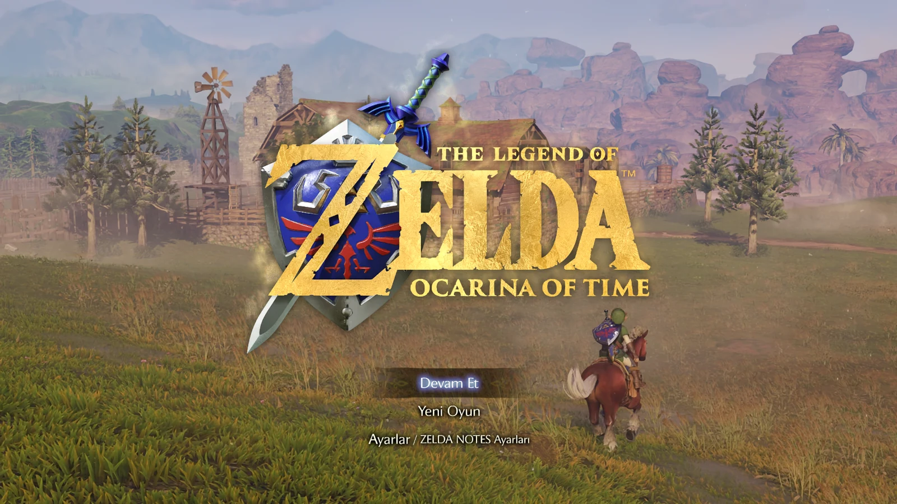
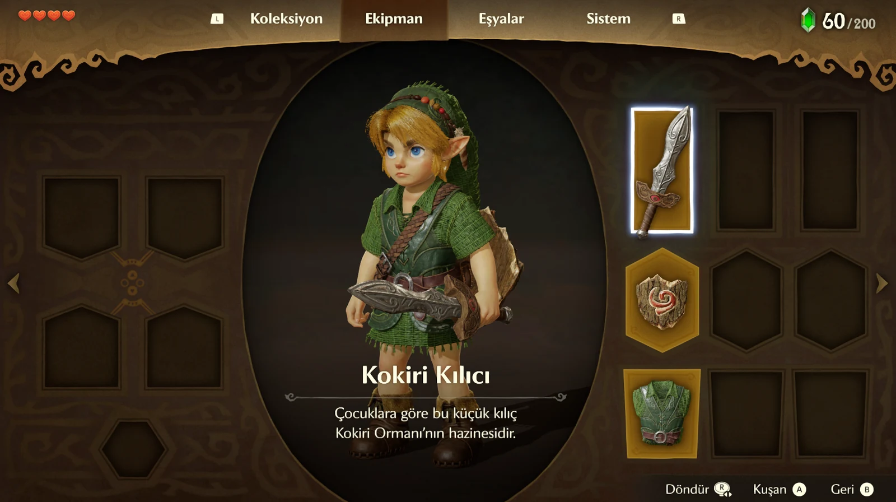
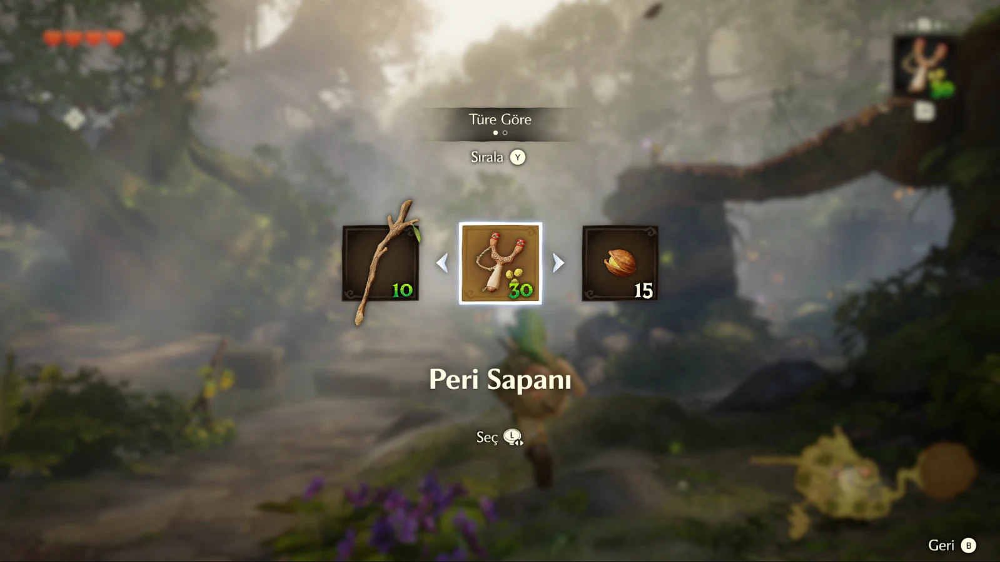
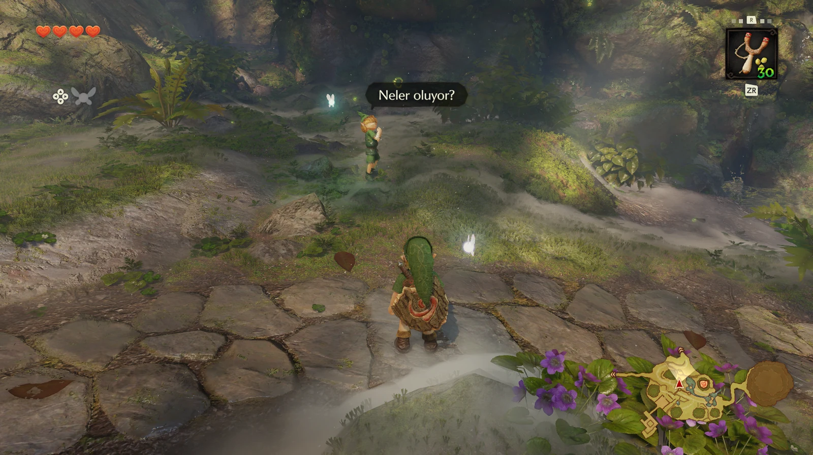
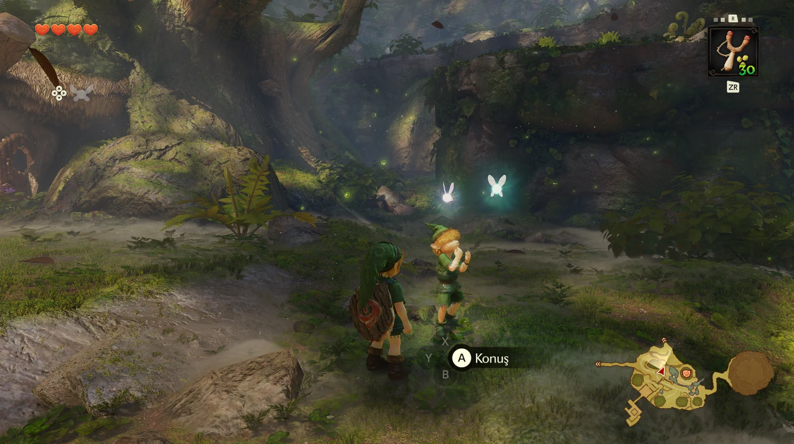

Ocarina of Time · Switch 2
Türkçe Yama
Ocarina of Time için Türkçe dil yaması. Menüler, eşya açıklamaları ve diyaloglar Türkçe.
Kurulum
Detaylı Rehber ›- 1Yamayı indirZIP dosyasını al
- 2Arşivi çıkartTurkceYama klasörü
- 3Mod dizinine kopyalaMevcut yamayı yedekle
- 4Dili seç ve başlatAmerican English
Oyundan Görüntüler
Ekran Görüntüleri
Görseli büyütmek için tıkla.












